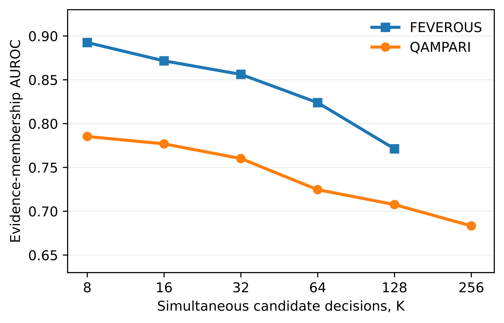
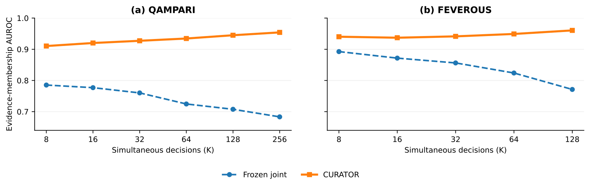
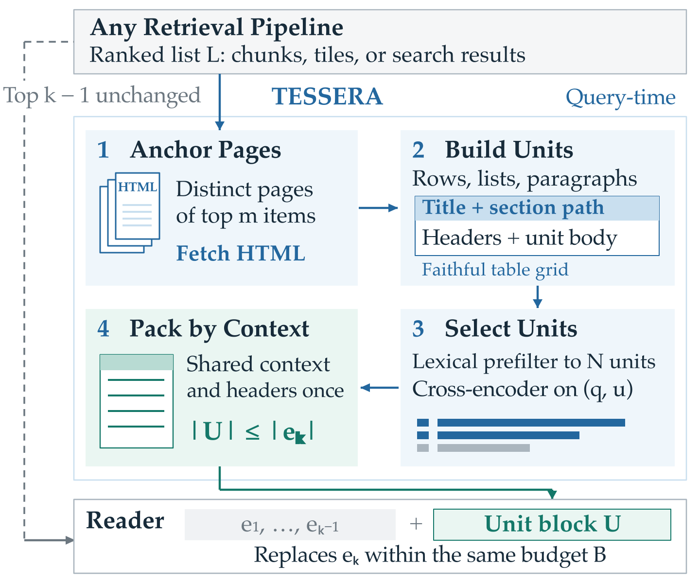
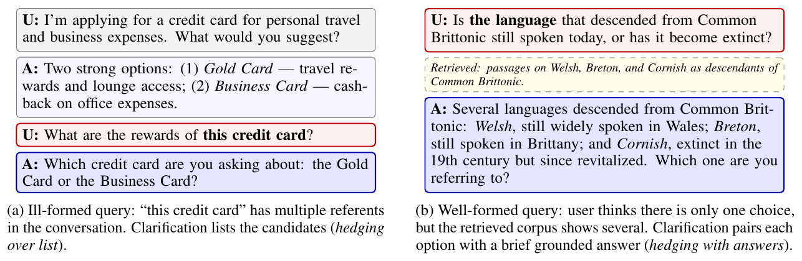
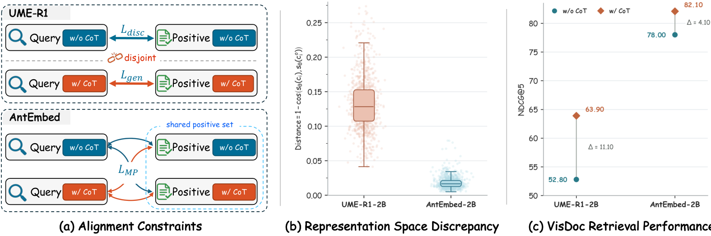
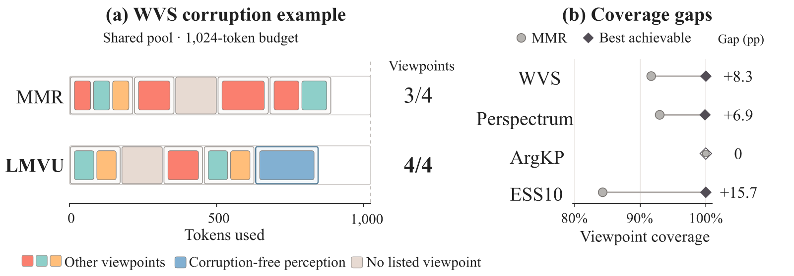
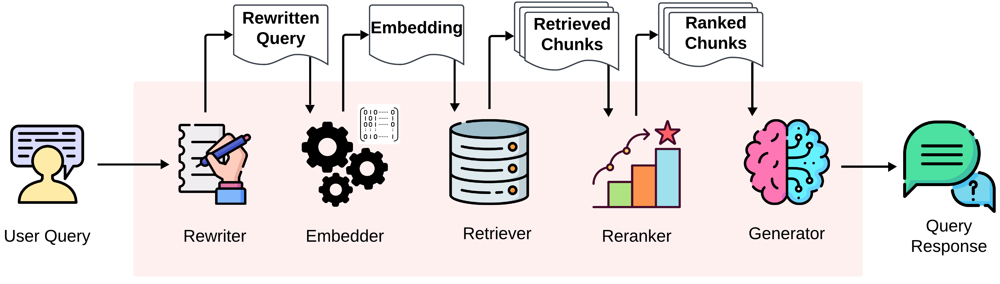

「泰晤士河流经伦敦」单看和问题无关，为什么必须留下？Curator 怎么一次挑出 RAG 要的句子问题是：「流经 2012 年夏季奥运会举办城市的是哪条河？」检索回来两段文字。一段讲奥运会，里面有一句「2012 年夏季奥运会在伦敦举行」。另一段讲伦敦，里面有一句「泰晤士河流经伦敦」。
两句都得留下，答案才凑得齐。可如果一句一句单独判断，「泰晤士河流经伦敦」里既没有奥运，也没有 2012，看上去和问题毫不相干。
这篇来自亚马逊云科技（AWS）的 AI 实验室，要解决的是 RAG 里的句子级证据挑选：在给定的 token 预算内，从检索回来的段落里只挑出回答需要的句子或表格单元格，交给生成模型。现有做法有三种。一种是重排模型逐句打分，每句只和问题配对，看不到别的句子，泰晤士河那句就会被漏掉。一种是给每个候选句打分时都把全部候选一起读一遍，判断最准，但同一段上下文要重复处理 K 次。第三种是一类「决策模型」：它原本用来对预先给定的选项直接打分，不生成文字，新一代模型能在一次前向里同时给出很多个判断。用它挑证据，所有候选一起读一遍就能各得一个分数。问题是，候选一多，现成的决策模型就越来越分不清哪句是证据。Curator 用不同候选数、不同证据密度的挑证据样本微调这个决策模型。在 QAMPARI 上，它每题打分仍只要约 0.9 秒，挑出的证据比逐句带全文打分还多 9% 到 16%，后者每题要 20 秒。
让决策模型专门练「一次判断很多句」，就能在一次前向的成本下挑得比逐句判断更准；这个优势在 token 预算紧的时候最明显。
三种打分方式，贵在哪里
先说清楚要比的是什么。所有方法挑句子的规则都一样：给每个候选句打一个分，按分数从高到低往里放，直到放满 token 预算。不同的只是分数怎么来。
逐句打分只看问题和当前这一句，看不到别的候选。逐句带全文打分，是给第 1 句打分时读一遍全部候选，给第 2 句打分时再读一遍，K 个候选就读 K 遍。联合打分只读一遍，所有候选的分数一次出来。
论文用同一个现成决策模型比较了这三种方式。在 QAMPARI 的 200 题小样本上，逐句带全文打分的召回最高，是 0.504；联合打分是 0.460；单句打分 0.428。可逐句带全文打分每题要 20 秒左右，联合打分不到 1 秒。这说明现成模型一次判断全部候选时，准确度打了折扣。

候选一多，现成模型就分不清了
联合打分省钱，但准不准？作者做了一组受控实验：每组候选里固定放 3 句真证据，其余全是干扰句，候选总数 K 从 8 一路加到 128 或 256，看模型分出证据的能力。衡量用 AUROC，就是随便拿一句证据和一句干扰句，模型给证据打分更高的概率。
结果是 K 越大，AUROC 越低。在 FEVEROUS 上从 K = 8 时约 0.89 掉到 K = 128 时约 0.77，在 QAMPARI 上从约 0.79 掉到 K = 256 时约 0.68。可见一次要判断的句子越多，判断的质量越差。

会不会只是输入变长了？作者另做了一个诊断。在 15 道 QAMPARI 题上，候选数从 8 加到 128，AUROC 从 0.800 降到 0.652。可在 K = 128 时再往上下文里塞 14,000 个无关 token，不增加要判断的句子，AUROC 反而从 0.652 变成 0.690。这组诊断说明，比起单纯变长，同时要做的判断数可能更影响表现。
Curator 怎么训
底座是 Perplexity 的 pplx-decider-flash-v1.2，一个基于 Qwen3.5-4B 的决策模型。每个候选句在输入里对应一个判断位置，模型在那里给出「是证据」和「不是证据」两个 logit，两者之差就是这句的分数。
训练数据来自 QAMPARI、HotpotQA 和 2WikiMultiHopQA，这三个数据集标了答案的出处句。作者把段落切成候选句，标出哪些是证据，然后按三种方式凑训练样本，K 取 8 到 128。第一种随机抽 K 句，保留自然的稀疏比例，有时一句证据都没有。第二种固定放 3 句证据，其余是干扰句，K 越大证据越稀。第三种尽量多放证据，最多 K − 1 句，逼模型在同一次判断里给出很多个「是」。
候选多了以后，证据只占很小一部分。因为干扰句太多，普通的损失会偏向它们。3 句证据在 8 个候选里占 37.5%，在 128 个候选里只占 2.3%。作者把损失改成按类别平衡：证据句的损失和干扰句的损失各自取平均再相加，免得一百多句干扰句把那 3 句证据的信号淹掉。 Hoot 说
用正文的设置：K = 128 个候选，其中 3 句证据、125 句干扰句。设训练早期模型还认不出证据，每句证据的损失是 0.7；干扰句大多已判对，每句损失 0.1。这两个损失值是示意。
干扰句的数量 → 普通平均里的份额 → 类别各自平均 → 证据的份额 → 没有证据的样本
- 干扰句的数量 → 普通平均普通损失把 128 句的损失加起来再平均，每句的分量一样。3 句证据合计只有 2.1，125 句干扰句合计 12.5。3 × 0.7 = 2.1；125 × 0.1 = 12.5
- 普通平均 → 证据的份额证据在总损失里只占约 14%，虽然每句证据都判得差得多。总损失的大头来自本来就判对的干扰句。2.1 ÷ (2.1 + 12.5) ≈ 14%
- 类别各自平均 → 证据的份额类别平衡先在证据里平均，得 0.7；再在干扰句里平均，得 0.1；两者相加。证据的份额升到约 88%。0.7 ÷ (0.7 + 0.1) ≈ 88%
- 类别各自平均 → 每句证据的分量在普通平均里每句证据的分量是 1/128，类别平衡里是 1/3。所以 K 越大，两种算法对证据的分量差得越多。128 ÷ 3 ≈ 43 倍
- 没有证据的样本 → 只剩一类随机抽样凑出的样本有时一句证据都没有。式 (4) 只对样本里出现的类别求和，这时只剩干扰句的平均那一项。损失 = 干扰句平均 0.1

出处
论文第 3.3 节式 (4)：类别平衡损失对每个出现的类别各取平均再相加；K = 128、3 句证据、37.5% 和 2.3% 来自同一节；每句的损失 0.7 和 0.1 是示意微调只动很少的参数：在 8 个全注意力层上加 LoRA，再训练判断用的输出层，一共约 380 万个参数，模型总共 45.4 亿。另外 40% 的训练样本来自通用的分类、选择和打分任务，同时向原模型做蒸馏，防止它忘掉原来的本事。在 7 个通用基准的 19,631 个样本上，Curator 的宏平均是 0.8810，原模型是 0.8733，没有一项有统计上可见的差别。
走一遍：伦敦和泰晤士河
下面用论文图 1 的例子。两段检索文字切成 6 个候选句，每句的 token 数、分数和预算都是示意。
第一步，切句。奥运那段有三句：「丹尼·博伊尔执导了开幕式」「2012 年夏季奥运会在伦敦举行」「共有 204 个国家参赛」。伦敦那段也有三句：「伦敦有很多博物馆和地标」「泰晤士河流经伦敦」「它是英国的主要河流之一」。假设每句约 8 个 token。
第二步，一次前向。问题和 6 个候选句拼成一个输入送进模型，6 个判断位置各出一对 logit。设「奥运在伦敦」那句得分 3.0，「泰晤士河流经伦敦」得分 2.0，其余 4 句在 −1.0 上下，说明模型认为前两句是证据。
第三步，看泰晤士河那句为什么能拿 2.0。打分时它和「奥运在伦敦」在同一个输入里，模型能把「伦敦」这条线连上。换成逐句打分，它只和问题配对，可能只有 −0.5，排在「伦敦有很多博物馆」之后。
第四步，放预算。预算设为 20 个 token。按分数先放「奥运在伦敦」，用掉 8；再放「泰晤士河」，累计 16；下一句再放就是 24，超了，停下。所以送给生成模型的就是这两句，答案所需的两跳都在里面。
第五步，算账。6 个候选，逐句带全文打分要跑 6 次，每次读全部 6 句，等于读 36 句；联合打分只跑 1 次，读 6 句，所以候选越多省得越多。真实 QAMPARI 上每题的候选多得多，论文实测逐句带全文打分每题 293,296 个输入 token、20.065 秒，Curator 是 11,411 个 token、0.925 秒。
现成决策模型走的也是同样这五步。它的问题出在第二步：K 从 6 变成 128，分数就不够分得开了。Curator 改的正是这一步打出来的分数。
实验结果
先看训练里用过的 QAMPARI。论文用的是 855 道开发集题，这些题也参与过挑选模型检查点，数字会偏乐观。
| 方法 | 召回（预算 512） | 召回（预算 2048） | 每题秒数 | 每题输入 token |
|---|---|---|---|---|
| 现成决策模型，联合打分 | 0.2763 | 0.5791 | 0.909 | 11,411 |
| 现成决策模型，逐句带全文 | 0.3166 | 0.6242 | 20.065 | 293,296 |
| Qwen3-Reranker，逐句 | 0.1874 | 0.5230 | 0.688 | 6,664 |
| Curator | 0.3663 | 0.6784 | 0.925 | 11,411 |
（数字来自论文表 2）
这说明 Curator 的成本和原来的联合打分几乎一样，召回却超过了贵 20 多倍的逐句带全文打分。预算越紧，差距越大：相对原模型，召回在预算 2048 时高 17.1%，在预算 512 时高 32.6%。
再看训练里没见过的任务。事实核查数据集 FEVEROUS 在预算 512 时，召回从原模型的 57.0% 升到 84.7%，逐句重排是 74.6%，说明练出来的能力能带到别的任务上。财报数据集 MultiHiertt 和法律合同数据集 CUAD 在预算 128 时，Curator 的召回比最强基线分别高 10.7% 和 14.4%；预算放到 2048，只高 1.5% 和 2.8%。
最后看回答质量。用一个 120B 的大模型作答，在 MuSiQue 上预算 128 时，Curator 挑的上下文让答对率到 48.7%，逐句重排是 39.7%，原模型 40.3%，按整段重排只有 19.3%。预算到 2048，几种方法都在 56.6% 到 56.8% 之间。所以挑句子的价值主要在上下文紧张的时候。
图 3 是第 2 节那组受控实验的复测。原模型的 AUROC 随 K 下降，Curator 基本持平甚至略升。在 QAMPARI 上它到 K = 256 也稳住了，而训练时的 K 最大只有 128。

消融也指向同一处。只拿单句样本微调，分辨能力有提升，但候选一多照样下降；改成联合训练，哪怕只用小候选集，下降就基本消失；再混入不同 K，大候选集上更好。
这对做 RAG 和检索的人意味着什么
上下文紧的时候，值得把整段送进去换成按句挑；挑句子要让模型同时看到其他候选。
预算 128 到 512 这一档，按句挑和按段送的差别最大：MuSiQue 上预算 128 时，按段重排的答对率不到按句挑的一半。如果你在做 agent，上下文还要留给工具输出和推理过程，证据能分到的预算往往就落在这一档。
用现成的多判断决策模型时，先测一下候选数对它的影响：固定几句证据，逐步加干扰句，看 AUROC 掉不掉。掉得厉害，就按 Curator 的路子用你自己的标注做联合微调：不同 K、不同证据密度，损失按类别平衡，混入一部分通用任务防遗忘。
局限
QAMPARI 的主要数字来自参与过检查点挑选的开发集。下游作答只用了一个 120B 模型，论文没写是哪个。
论文的局限一节是空的。和同期也用决策模型做检索的 DecisionRAG，作者说设置不同，没有直接比。
图 3 里不同 K 的候选池是分别抽的，作者自己也说，这组结果不能把提升全部归因到判断数量上。候选太多、放不进一个上下文时要分组打分再合并，这种情况的成本论文没有单独报告。
读完这篇，你觉得
夜读鸮记下了，谢谢你的反馈。
点一下即可，无需登录；再点一次撤回。只统计匿名次数，不记录你是谁。
相关论文RELATED

Retrieval · 2026-10-29Tessera: Structure-Completed Evidence Units for Web Retrieval-Augmented Generation问维基百科《欢乐糖果屋》的制片人是谁，答案就在页面信息框的制片一行，可文本抽取把这一格里的两个名字弄丢了，读者模型只看到导演，于是答错。这篇论文在整个英文维基百科上把答案证据从网页源码一路追到读者输入，发现这种丢失很普遍：7.6% 的问题证据根本没完整进索引，其中 81% 是表格单元格、表头或图注。Tessera 检索照旧，只在读之前把排名靠前的网页重新拆成一行表格、一个列表项这样的小单元，补上标题、章节和表头，再挑相关的装进同样的 token 预算。文本和截图两类流水线的答对率都提高 5 到 6 个点。
Agentic · 2026-10-23A Small Model Asks Better: Fine-Tuning Query Clarification for Retrieval-Augmented GenerationIBM 构建了约 3,900 条的多轮 RAG 反问数据集 ClariEdge，专门包含"看起来含糊、但上文已能确定指代"的难负例，用来对 Granite 小模型做 LoRA 微调，判断要不要反问并列出候选项。Granite-4.1-3B LoRA 判断准确率 96.6%，提示词方式下 GPT-4o 为 79.4%，GPT-5.6 Sol 为 73.1%（后者倾向于什么都反问）。去掉难负例训练后，难负例类准确率从 87.3% 跌到 35.4%。
Retrieval · 2026-11-16AntEmbed: Dual-Mode Multimodal Embedding Model for Efficient and Fine-Grained Retrieval多模态检索里有两种 embedding。判别式的直接编码原始输入，快，但抓不住细粒度的语义。生成式的先让模型推理一遍查询意图和区分证据，再编码，更准，可每次查询都要多跑一次推理。苏州大学和蚂蚁集团的 AntEmbed 想让一个模型两种都能用，而且共用同一个候选索引。它把原始输入和加上推理内容的输入当成同一样东西的两个视角，用多正例对比学习拉进同一个向量空间，再把推理视角给出的候选相似度分布蒸馏给原始表示，让不推理的模式也变强。在 MMEB-v2 上，AntEmbed-8B 用推理模式拿到 81.5 的总分，比最强基线高 3.1 分。2B 模型不推理时也有 70.2 分，胜过几个要推理的生成式模型。同一个索引可以按查询难度选择推理还是直接检索。
Retrieval · 2026-10-25Learning Marginal Viewpoint Utility for Budgeted Evidence Selection in RAG问一个关于选举参与的问题，完整的回答应该同时讲到投了票、没投票、没有投票资格三种人；如果上下文里全是投票者的回答，哪怕每条都准确、相关，也只代表了一种观点。LMVU 是一个只有 18 个系数的线性排序器，每一步用候选和已选证据之间的相似度算出新颖度等特征，估计它能给当前上下文补上多少还没覆盖的观点，系数在带观点标注的开发集上学出来。作者用上下文覆盖了标注观点中的几成来评价。在四个带观点标注的基准上，LMVU 的平均覆盖率是 0.9588，超过全部 16 个对比方法，其中包括两个训练成本高出几个数量级的神经重排器。 Retrieval · 2026-11-13PCG-RAG: Progressive Compositional Grounding for Retrieval-Augmented Generation in Complex Web Question Answering复杂网页问答常常要先从几条线索里认出说的是谁，再去查它的某个属性，而常见的错法是只对上一条线索就把名字当成定论。论文里的例子是一座改建成美术馆的伦敦发电厂，系统只凭伦敦和发电厂就认定是 Battersea，接着查到的建筑师其实属于另一座楼。PCG-RAG 把这种只对上部分线索的名字当作搜索线索，用它去补查还没对上的条件，确认之后才让后续问题依赖它。最后生成答案时，它把确认身份的段落和回答属性的段落一起放进上下文。在 BrowseComp-Plus 上，它的准确率比最强基线高 5.43 个百分点，token 用量还少了 82.98%。先认准对象再查属性，比一次堆更多检索结果更有效。
Retrieval · 2026-11-13PCG-RAG: Progressive Compositional Grounding for Retrieval-Augmented Generation in Complex Web Question Answering复杂网页问答常常要先从几条线索里认出说的是谁，再去查它的某个属性，而常见的错法是只对上一条线索就把名字当成定论。论文里的例子是一座改建成美术馆的伦敦发电厂，系统只凭伦敦和发电厂就认定是 Battersea，接着查到的建筑师其实属于另一座楼。PCG-RAG 把这种只对上部分线索的名字当作搜索线索，用它去补查还没对上的条件，确认之后才让后续问题依赖它。最后生成答案时，它把确认身份的段落和回答属性的段落一起放进上下文。在 BrowseComp-Plus 上，它的准确率比最强基线高 5.43 个百分点，token 用量还少了 82.98%。先认准对象再查属性，比一次堆更多检索结果更有效。 Retrieval · 2026-11-12OpticalRAG: Pixel-Space Compression for Token-Efficient Retrieval-Augmented GenerationRAG 想省 token，常见做法是在文本上删词或做摘要，压得越狠，丢的细节越多。OpticalRAG 换了个方向：把文档渲染成页面图片，用冻结的视觉编码器编成视觉 token，检索和压缩都在这些视觉 token 上做。文本 query 经过一个轻量投影进入同一个视觉特征空间去找相关内容，再由一个以 query 为条件的交叉注意力小模块，把检索到的 256 个视觉 token 压成 16 个交给大模型。在 LongBench-v2 上，它比不做检索的底座模型高 5.17 分。另一个基准上，保留几百上千个文本 token 的压缩方法原始分更高，它的长处是用极少的 token 拿到接近的分数。
Retrieval · 2026-11-12OpticalRAG: Pixel-Space Compression for Token-Efficient Retrieval-Augmented GenerationRAG 想省 token，常见做法是在文本上删词或做摘要，压得越狠，丢的细节越多。OpticalRAG 换了个方向：把文档渲染成页面图片，用冻结的视觉编码器编成视觉 token，检索和压缩都在这些视觉 token 上做。文本 query 经过一个轻量投影进入同一个视觉特征空间去找相关内容，再由一个以 query 为条件的交叉注意力小模块，把检索到的 256 个视觉 token 压成 16 个交给大模型。在 LongBench-v2 上，它比不做检索的底座模型高 5.17 分。另一个基准上，保留几百上千个文本 token 的压缩方法原始分更高，它的长处是用极少的 token 拿到接近的分数。 Retrieval · 2026-11-11Lightfoot: Graph Retrieval-Augmented Generation with Exact, Model-Free Document DeletionGraphRAG 上线后有两笔账论文很少算：建图花多少钱，删文档有多麻烦。合同到期或用户要求删除时，要把一篇文档和由它派生的内容都清掉，可混了多篇文档内容的实体摘要很难拆干净。Lightfoot 规定图里每条记录都只由单段的抽取结果算出来，每段只调一次模型，检索不调模型，删文档就是数据库操作，建图成本在三个数据集上也都最低。在 MuSiQue 全量语料上删掉 10% 的文档后，图和只用剩余文档重建的结果完全相同，LightRAG 删同样的文档要调 2187 次模型、跑 3.7 小时。代价是准确率和 HippoRAG 2 互有胜负，在 2WikiMultiHopQA 上明显落后。能精确删除，靠的是没有任何记录来自读过多段内容的模型调用，有合规删除需求的团队可以照这条约束设计索引。
Retrieval · 2026-11-11Lightfoot: Graph Retrieval-Augmented Generation with Exact, Model-Free Document DeletionGraphRAG 上线后有两笔账论文很少算：建图花多少钱，删文档有多麻烦。合同到期或用户要求删除时，要把一篇文档和由它派生的内容都清掉，可混了多篇文档内容的实体摘要很难拆干净。Lightfoot 规定图里每条记录都只由单段的抽取结果算出来，每段只调一次模型，检索不调模型，删文档就是数据库操作，建图成本在三个数据集上也都最低。在 MuSiQue 全量语料上删掉 10% 的文档后，图和只用剩余文档重建的结果完全相同，LightRAG 删同样的文档要调 2187 次模型、跑 3.7 小时。代价是准确率和 HippoRAG 2 互有胜负，在 2WikiMultiHopQA 上明显落后。能精确删除，靠的是没有任何记录来自读过多段内容的模型调用，有合规删除需求的团队可以照这条约束设计索引。
Retrieval · 2026-11-05From Logs to Faults: Reference-Free Fault Localization for Retrieval-Augmented Generation PipelinesRAGLog 只读 RAG 流水线每次运行留下的调用日志，不需要标准答案，也不用改代码，就能指出这次运行是哪个环节出了错。这件事有用，是因为中间出了错，最终答案却可能是对的。在五条开源流水线的自然运行里，37% 至少有一个环节出错，其中超过三分之一照样答对了，只看答案发现不了。它逐个环节检查：改写后的查询有没有丢掉原问题里的人名、数字和日期，检索回来的段落里有没有一段真正含有答案，重排有没有把含答案的那段挤出去，答案在给定材料里有没有依据。每个环节再由各自训练好的分类器判断是否出错。在自然发生的故障上，它定位出错环节的 F1 是 0.73，Claude Code 是 0.58。排查 RAG 故障时，日志本身就够做第一轮筛查。
讨论
欢迎补充实验细节、复现经验或不同看法。需 GitHub 登录。
正在加载讨论…